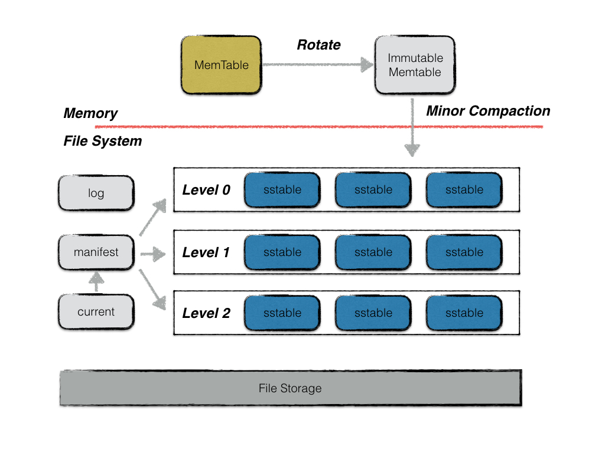

leveldb-handbook博客
leveldb-handbook - leveldb-handbook 文档
整体架构

重要组件：
- memtable
- immutable memtable
- log (journal)
- sstable
- manifest
- current
memtable
之前提到，leveldb的一次写入操作并不是直接将数据刷新到磁盘文件，而是首先写入到内存中作为代替，memtable就是一个在内存中进行数据组织与维护的结构。memtable中，所有的数据按用户定义的排序方法排序之后按序存储，等到其存储内容的容量达到阈值时（默认为4MB），便将其转换成一个不可修改的memtable（immutable memtable），与此同时创建一个新的memtable，供用户继续进行读写操作。memtable底层使用了一种跳表（skiplist）数据结构，这种数据结构效率可以比拟二叉查找树，绝大多数操作的时间复杂度为O(log n)。
immutable memtable
memtable的容量到达阈值时，便会转换成一个不可修改的memtable，也称为immutable memtable。这两者的结构定义完全一样，区别只是immutable memtable是只读的。当一个immutable memtable被创建时，leveldb的后台压缩进程便会将利用其中的内容，创建一个sstable，持久化到磁盘文件中。
log
leveldb的写操作并不是直接写入磁盘的，而是首先写入到内存。假设写入到内存的数据还未来得及持久化，leveldb进程发生了异常，抑或是宿主机器发生了宕机，会造成用户的写入发生丢失。因此leveldb在写内存之前会首先将所有的写操作写到日志文件中，也就是log文件。当以下异常情况发生时，均可以通过日志文件进行恢复：
- 写log期间进程异常；
- 写log完成，写内存未完成；
- write动作完成（即log、内存写入都完成）后，进程异常；
- Immutable memtable持久化过程中进程异常；
- 其他压缩异常（较为复杂，首先不在这里介绍）；
当第一类情况发生时，数据库重启读取log时，发现异常日志数据，抛弃该条日志数据，即视作这次用户写入失败，保障了数据库的一致性；
当第二类，第三类，第四类情况发生了，均可以通过redo日志文件中记录的写入操作完成数据库的恢复。
每次日志的写操作都是一次顺序写，因此写效率高，整体写入性能较好。
此外，leveldb的用户写操作的原子性同样通过日志来实现，比如WriteBatch。
日志基于LSM树（Log Structured-Merge Tree）实现。LSM树写性能极高的原理，简单地来说就是尽量减少随机写的次数，尽量使用顺序写。
sstable
虽然leveldb采用了先写内存的方式来提高写入效率，但是内存中数据不可能无限增长，且日志中记录的写入操作过多，会导致异常发生时，恢复时间过长。因此内存中的数据达到一定容量，就需要将数据持久化到磁盘中。除了某些元数据文件，leveldb的数据主要都是通过sstable来进行存储。
虽然在内存中，所有的数据都是按序排列的，但是当多个memetable数据持久化到磁盘后，对应的不同的sstable之间是存在交集的，在读操作时，需要对所有的sstable文件进行遍历，严重影响了读取效率。因此leveldb后台会“定期“整合这些sstable文件，该过程也称为compaction。随着compaction的进行，sstable文件在逻辑上被分成若干层，由内存数据直接dump出来的文件称为level 0层文件，后期整合而成的文件为level i层文件，这也是leveldb这个名字的由来。
注意，所有的sstable文件本身的内容是不可修改的，这种设计哲学为leveldb带来了许多优势，简化了很多设计。具体将在接下来的文章中具体解释。
sstable文件内部的键值记录也是排好序的，占据一个key范围区间。sstable内部建有索引，加速搜索。
Level 0比较特殊，该层的sstable间是可以有范围交集的（会不会出现同样的key？）；Level i内的sstable则是互不相交，从低到高形成一个线性递增区间。
层与层之间是可以有overlap的，这也是compact操作需要处理的。上一层的一个sstable掉到下一层时，下一层可能有多个sstable跟它有交集，这些sstable都要参与compaction，整合之后又形成互不相交的sstable（merge sort）。
所以，每一层都是独立的，并没有下一层的键值范围包含上一层。那么，来一个读操作，这个键并不在DB中的话（miss），它将会搜索sstable的每一层（IO代价大）。一种优化方法是使用Bloom Filter（在内存中），如果不在过滤器中，那么肯定不在DB中；如果在过滤器中，有可能是false positive，需要实际去寻找。
每一层的sstable总容量从上到下，相互10倍的关系，比如Level 1总容量上限是10MB，Level 2的总容量上限是100MB。
一个key可能在多个层之间同时存在，相互间谁新谁旧（序列号）？
- 第0层，右边的sstable新
- 上层比下层新？
manifest
leveldb中有个版本的概念，一个版本中主要记录了每一层中所有文件的元数据，元数据包括（1）文件大小（2）最大key值（3）最小key值。该版本信息十分关键，除了在查找数据时，利用维护的每个文件的最小/大key值来加快查找，还在其中维护了一些进行compaction的统计值，来控制compaction的进行。
以goleveldb为例，一个文件的元数据主要包括了最大最小key，文件大小等信息：
// tFile holds basic information about a table.
type tFile struct {
fd storage.FileDesc
seekLeft int32
size int64
imin, imax internalKey
}
一个版本信息主要维护了每一层所有文件的元数据。
type version struct {
s *session // session - version
levels []tFiles // file meta
// Level that should be compacted next and its compaction score.
// Score < 1 means compaction is not strictly needed. These fields
// are initialized by computeCompaction()
cLevel int // next level
cScore float64 // current score
cSeek unsafe.Pointer
closing bool
ref int
released bool
}
当每次compaction完成（或者换一种更容易理解的说法，当每次sstable文件有新增或者减少），leveldb都会创建一个新的version，创建的规则是:
versionNew = versionOld + versionEdit
versionEdit指代的是基于旧版本的基础上，变化的内容（例如新增或删除了某些sstable文件）。
manifest文件就是用来记录这些versionEdit信息的。一个versionEdit数据，会被编码成一条记录，写入manifest文件中。例如下图便是一个manifest文件的示意图，其中包含了3条versionEdit记录，每条记录包括（1）新增哪些sst文件（2）删除哪些sst文件（3）当前compaction的下标（4）日志文件编号（5）操作seqNumber等信息。通过这些信息，leveldb便可以在启动时，基于一个空的version，不断apply这些记录，最终得到一个上次运行结束时的版本信息。

疑问？
- 这里的version都是针对sstable，内存中的memtable和immutable memtable呢？
- version的清理？
current
这个文件的内容只有一个信息，就是记载当前的manifest文件名。
因为每次leveldb启动时，都会创建一个新的Manifest文件。因此数据目录可能会存在多个Manifest文件。Current则用来指出哪个Manifest文件才是我们关心的那个Manifest文件。
读写操作
写操作
leveldb以其优秀的写性能著名，在本文中就先来分析一下leveldb整个写入的流程，底层数据结构的支持以及为何能够获取极高的写入性能。
整体流程

leveldb的一次写入分为两部分：
- 将写操作写入日志；
- 将写操作应用到内存数据库中；
之前已经阐述过为何这样的操作可以获得极高的写入性能，以及通过先写日志的方法能够保障用户的写入不丢失。
注解
其实leveldb仍然存在写入丢失的隐患。在写完日志文件以后，操作系统并不是直接将这些数据真正落到磁盘中，而是暂时留在操作系统缓存中（并没有sync？）。因此当用户写入操作完成，操作系统还未来得及落盘的情况下，发生系统宕机，就会造成写丢失；但是若只是进程异常退出，则不存在该问题（因为对应的文件内容由OS负责继续刷下去）。
写类型
leveldb对外提供的写入接口有：（1）Put（2）Delete两种。这两种本质对应同一种操作，Delete操作同样会被转换成一个value为空的Put操作。
除此以外，leveldb还提供了一个批量处理的工具Batch，用户可以依据Batch来完成批量的数据库更新操作，且这些操作是原子性的。
单个Put或Delete操作也是放入WriteBatch来处理的。
batch结构
- include/leveldb/write_batch.h，
WriteBatch::rep_- rep_是batch的结构表示，类型是string。记录不停往后添加。记录里的length经过编码，是变长的，因为大部分长度都是短的，不需要32位表示。
无论是Put/Del操作，还是批量操作，底层都会为这些操作创建一个batch实例作为一个数据库操作的最小执行单元。因此首先介绍一下batch的组织结构。

在batch中，每一条数据项都按照上图格式进行编码。每条数据项编码后的第一位是这条数据项的类型（更新还是删除），之后是数据项key的长度，数据项key的内容；若该数据项不是删除操作，则再加上value的长度，value的内容。
batch中会维护一个size值，用于表示其中包含的数据量的大小。该size值为所有数据项key与value长度的累加，以及每条数据项额外的8个字节。这8个字节用于存储一条数据项额外的一些信息。
key值编码
当数据项从batch中写入到内存数据库中是，需要将一个key值的转换，即在leveldb内部，所有数据项的key是经过特殊编码的，这种格式称为internalKey。

internalkey在用户key的基础上，尾部追加了8个字节，用于存储（1）该操作对应的sequence number（2）该操作的类型。
其中，每一个操作都会被赋予一个sequence number。该计时器是在leveldb内部维护，每进行一次操作就做一个累加。由于在leveldb中，一次更新或者一次删除，采用的是append的方式，并非直接更新原数据。因此对应同样一个key，会有多个版本的数据记录，而最大的sequence number对应的数据记录就是最新的。
此外，leveldb的快照（snapshot）也是基于这个sequence number实现的，即每一个sequence number代表着数据库的一个版本。
合并写
leveldb中，在面对并发写入时，做了一个处理的优化。在同一个时刻，只允许一个写入操作将内容写入到日志文件以及内存数据库中。为了在写入进程较多的情况下，减少日志文件的小写入，增加整体的写入性能，leveldb将一些“小写入”合并成一个“大写入”。
流程如下：
第一个获取到写锁的写操作
- 第一个写入操作获取到写入锁；
- 在当前写操作的数据量未超过合并上限，且有其他写操作pending的情况下，将其他写操作的内容合并到自身；
- 若本次写操作的数据量超过上限，或者无其他pending的写操作了，将所有内容统一写入日志文件，并写入到内存数据库中；
通知每一个被合并的写操作最终的写入结果，释放或移交写锁；- 如何通知？
其他写操作：
- 等待获取写锁或者被合并；
- 若被合并，判断是否合并成功，若成功，则等待最终写入结果；反之，则表明获取锁的写操作已经oversize了，此时，该操作直接从上个占有锁的写操作中接过写锁进行写入；
- 若未被合并，则继续等待写锁或者等待被合并；

原子性
leveldb的任意一个写操作（无论包含了多少次写），其原子性都是由日志文件实现的。一个写操作中所有的内容会以一个日志中的一条记录，作为最小单位写入。
考虑以下两种异常情况：
- 写日志未开始，或写日志完成一半，进程异常退出；
- 写日志完成，进程异常退出；
前者中可能存储一个写操作的部分写已经被记载到日志文件中，仍然有部分写未被记录，这种情况下，当数据库重新启动恢复时，读到这条日志记录时，发现数据异常，直接丢弃或退出，实现了写入的原子性保障。
后者，写日志已经完成，已经数据未真正持久化，数据库启动恢复时通过redo日志实现数据写入，仍然保障了原子性。
日志、内存数据库
这部分数据将由《leveldb源码解析 - 日志》和《leveldb源码解析 - 内存数据库》两篇文章详细分析。
读操作
leveldb提供给用户两种进行读取数据的接口：
- 直接通过
Get接口读取数据； - 首先创建一个
snapshot，基于该snapshot调用Get接口读取数据；
两者的本质是一样的，只不过第一种调用方式默认地以当前数据库的状态创建了一个snapshot，并基于此snapshot进行读取。
读者可能不了解snapshot（快照）到底是什么？简单地来说，就是数据库在某一个时刻的状态。基于一个快照进行数据的读取，读到的内容不会因为后续数据的更改而改变。
由于两种方式本质都是基于快照进行读取的，因此在介绍读操作之前，首先介绍快照。
快照
快照代表着数据库某一个时刻的状态，在leveldb中，作者巧妙地用一个整型数来代表一个数据库状态。
在leveldb中，用户对同一个key的若干次修改（包括删除）是以维护多条数据项的方式进行存储的（直至进行compaction时才会合并成同一条记录），每条数据项都会被赋予一个序列号，代表这条数据项的新旧状态。一条数据项的序列号越大，表示其中代表的内容为最新值。
因此，每一个序列号，其实就代表着leveldb的一个状态。换句话说，每一个序列号都可以作为一个状态快照。
当用户主动或者被动地创建一个快照时，leveldb会以当前最新的序列号对其赋值。例如图中用户在序列号为98的时刻创建了一个快照，并且基于该快照读取key为“name”的数据时，即便此刻用户将"name"的值修改为"dog"，再删除，用户读取到的内容仍然是“cat”。

所以，利用快照能够保证数据库进行并发的读写操作。
在获取到一个快照之后，leveldb会为本次查询的key构建一个internalKey（格式如上文所述），其中internalKey的seq字段使用的便是快照对应的seq。通过这种方式可以过滤掉所有seq大于快照号的数据项。
读取流程

leveldb读取分为三步：
- 在memory db中查找指定的key，若搜索到符合条件的数据项，结束查找；
- 在冻结的memory db中查找指定的key，若搜索到符合条件的数据项，结束查找；
- 按低层至高层的顺序在level i层的sstable文件中查找指定的key，若搜索到符合条件的数据项，结束查找，否则返回Not Found错误，表示数据库中不存在指定的数据；
注解
- 注意leveldb在每一层sstable中查找数据时，都是按序依次查找sstable的。
- 0层的文件比较特殊。由于0层的文件中
可能存在key重合的情况，因此在0层中，文件编号大的sstable优先查找。理由是文件编号较大的sstable中存储的总是最新的数据。 - 非0层文件，一层中所有文件之间的
key不重合，因此leveldb可以借助sstable的元数据（一个文件中最小与最大的key值）进行快速定位，每一层只需要查找一个sstable文件的内容。
在memory db或者sstable的查找过程中，需要根据指定的序列号拼接一个internalKey，查找用户key一致，且seq号不大于指定seq的数据，具体的查找过程可见《内存数据库》和《sstable》两篇文章。
日志
为了防止写入内存的数据库因为进程异常、系统掉电等情况发生丢失，leveldb在写内存之前会将本次写操作的内容写入日志文件中。

在leveldb中，有两个memory db，以及对应的两份日志文件。其中一个memory db是可读写的，当这个db的数据量超过预定的上限时，便会转换成一个不可读的memory db，与此同时，与之对应的日志文件也变成一份frozen log。
而新生成的immutable memory db则会由后台的minor compaction进程将其转换成一个sstable文件进行持久化，持久化完成，与之对应的frozen log被删除。
在本文中主要分析日志的结构、写入读取操作。
日志结构

为了增加读取效率，日志文件中按照block进行划分，每个block的大小为32KiB。每个block中包含了若干个完整的chunk。
一条日志记录包含一个或多个chunk。每个chunk包含了一个7字节大小的header，前4字节是该chunk的校验码，紧接的2字节是该chunk数据的长度，以及最后一个字节是该chunk的类型。其中checksum校验的范围包括chunk的类型以及随后的data数据。
chunk共有四种类型：full，first，middle，last。一条日志记录若只包含一个chunk，则该chunk的类型为full。若一条日志记录包含多个chunk，则这些chunk的第一个类型为first, 最后一个类型为last，中间包含大于等于0个middle类型的chunk。
由于一个block的大小为32KiB，因此当一条日志文件过大时，会将第一部分数据写在第一个block中，且类型为first，若剩余的数据仍然超过一个block的大小，则第二部分数据写在第二个block中，类型为middle，最后剩余的数据写在最后一个block中，类型为last。
日志内容
日志的内容为写入的batch编码后的信息。
具体的格式为：

一条日志记录的内容包含：
- Header
- Data
其中header中有（1）当前db的sequence number（2）本次日志记录中所包含的put/del操作的个数。
紧接着写入所有batch编码后的内容。有关batch的编码规则，可以见 读写操作.
日志写

日志写入流程较为简单，在leveldb内部，实现了一个journal的writer。首先调用Next函数获取一个singleWriter，这个singleWriter的作用就是写入一条journal记录。
singleWriter开始写入时，标志着第一个chunk开始写入。在写入的过程中，不断判断writer中buffer的大小，若超过32KiB，将chunk开始到现在做为一个完整的chunk，为其计算header之后将整个block写入文件。与此同时reset buffer，开始新的chunk的写入。
若一条journal记录较大，则可能会分成几个chunk存储在若干个block中。
日志读

同样，日志读取也较为简单。为了避免频繁的IO读取，每次从文件中读取数据时，按block（32KiB）进行块读取。
每次读取一条日志记录，reader调用Next函数返回一个singleReader。singleReader每次调用Read函数就返回一个chunk的数据。每次读取一个chunk，都会检查这批数据的校验码、数据类型、数据长度等信息是否正确，若不正确，且用户要求严格的正确性，则返回错误，否则丢弃整个chunk的数据。
循环调用singleReader的read函数，直至读取到一个类型为Last的chunk，表示整条日志记录都读取完毕，返回。
内存数据库，memtable
leveldb中内存数据库用来维护有序的key-value对，其底层是利用跳表实现，绝大多数操作（读／写）的时间复杂度均为O(log n)，有着与平衡树相媲美的操作效率，但是从实现的角度来说简单许多，因此在本文中将介绍一下内存数据库的实现细节。
跳表
概述
跳表（SkipList）是由William Pugh提出的。他在论文《Skip lists: a probabilistic alternative to balanced trees》中详细地介绍了有关跳表结构、插入删除操作的细节。
这种数据结构是利用概率均衡技术，加快简化插入、删除操作，且保证绝大大多操作均拥有O(log n)的良好效率。
作者在他的论文中这样介绍跳表：

平衡树（以红黑树为代表）是一种非常复杂的数据结构，为了维持树结构的平衡，获取稳定的查询效率，平衡树每次插入可能会涉及到较为复杂的节点旋转等操作。作者设计跳表的目的就是借助概率平衡，来构建一个快速且简单的数据结构，取代平衡树。

作者从链表讲起，一步步引出了跳表这种结构的由来。
图a中，所有元素按序排列，被存储在一个链表中，则一次查询之多需要比较N个链表节点；
图b中，每隔2个链表节点，新增一个额外的指针，该指针指向间距为2的下一个节点，如此以来，借助这些额外的指针，一次查询至多只需要⌈n/2⌉ + 1次比较；
图c中，在图b的基础上，每隔4个链表节点，新增一个额外的指针，指向间距为4的下一个节点，一次查询至多需要⌈n/4⌉ + 2次比较；
作者推论，若每隔2^ i个节点，新增一个辅助指针，最终一次节点的查询效率为O(log n)。但是这样不断地新增指针，使得一次插入、删除操作将会变得非常复杂。
一个拥有k个指针的结点称为一个k层结点（level k node）。按照上面的逻辑，50%的结点为1层节点，25%的结点为2层节点，12.5%的结点为3层节点。若保证每层节点的分布如上述概率所示，则仍然能够相同的查询效率。图e便是一个示例。
维护这些辅助指针将会带来较大的复杂度，因此作者将每一层中，每个节点的辅助指针指向该层中下一个节点。故在插入删除操作时，只需跟操作链表一样，修改相关的前后两个节点的内容即可完成，作者将这种数据结构称为跳表。
结构

一个跳表的结构示意图如上所示。
跳跃列表是按层建造的。底层是一个普通的有序链表。每个更高层都充当下面链表的"快速通道"，这里在层 i 中的元素按某个固定的概率 p (通常为0.5或0.25)出现在层 i+1 中。平均起来，每个元素都在 1/(1-p) 个列表中出现，而最高层的元素（通常是在跳跃列表前端的一个特殊的头元素）在 O(log1/p n) 个列表中出现。
查找

在介绍插入和删除操作之前，我们首先介绍查找操作，该操作是上述两个操作的基础。
例如图中，需要查找一个值为17的链表节点，查找的过程为：
- 首先根据跳表的高度选取最高层的头节点；
- 若跳表中的节点内容小于查找节点的内容，则取该层的下一个节点继续比较；
- 若跳表中的节点内容等于查找节点的内容，则直接返回；
- 若跳表中的节点内容大于查找节点的内容，且层高不为0，则降低层高，且从前一个节点开始，重新查找低一层中的节点信息；若层高为0，则返回当前节点，该节点的key大于所查找节点的key。
综合来说，就是利用稀疏的高层节点，快速定位到所需要查找节点的大致位置，再利用密集的底层节点，具体比较节点的内容。
插入
插入操作借助于查找操作实现。

- 在查找的过程中，不断记录每一层的前任节点，如图中红色圆圈所表示的；
- 为新插入的节点随机产生层高（随机产生层高的算法较为简单，依赖最高层数和概率值p，可见下文中的代码实现）；
- 在合适的位置插入新节点（例如图中节点12与节点19之间），并依据查找时记录的前任节点信息，在每一层中，以链表插入的方式，将该节点插入到每一层的链接中。
链表插入指：将当前节点的Next值置为前任节点的Next值，将前任节点的Next值替换为当前节点。
func (p *DB) randHeight() (h int) {
const branching = 4
h = 1
for h < tMaxHeight && p.rnd.Int()%branching == 0 {
h++
}
return
}
删除
跳表的删除操作较为简单，依赖查找过程找到该节点在整个跳表中的位置后，以链表删除的方式，在每一层中，删除该节点的信息。
链表删除指：将前任节点的Next值替换为当前节点的Next值，并将当前节点所占的资源释放。
迭代
向后遍历
- 若迭代器刚被创建，则根据用户指定的查找范围[Start, Limit)找到一个符合条件的跳表节点；
- 若迭代器处于中部，则取出上一次访问的跳表节点的后继节点，作为本次访问的跳表节点（后继节点为最底层的后继节点）；
- 利用跳表节点信息（keyvalue数据偏移量，key，value值长度等），获取keyvalue数据；
向前遍历
- 若迭代器刚被创建，则根据用户指定的查找范围[Start, Limit）在跳表中找到最后一个符合条件的跳表节点；
- 若迭代器处于中部，则利用上一次访问的节点的key值，查找比该key值更小的跳表节点；
- 利用跳表节点信息（keyvalue数据偏移量，key，value值长度等），获取keyvalue数据；
内存数据库
在介绍完跳表这种数据结构的组织原理以后，我们介绍leveldb如何利用跳表来构建一个高效的内存数据库。
键值编码
在介绍内存数据库之前，首先介绍一下内存数据库的键值编码规则。由于内存数据库本质是一个kv集合，且所有的数据项都是依据key值排序的，因此键值的编码规则尤为关键。
内存数据库中，key称为internalKey，其由三部分组成：
- 用户定义的key：这个key值也就是原生的key值；
- 序列号：leveldb中，每一次写操作都有一个sequence number，标志着写入操作的先后顺序。由于在leveldb中，可能会有多条相同key的数据项同时存储在数据库中，因此需要有一个序列号来标识这些数据项的新旧情况。序列号最大的数据项为最新值；
- 类型：标志本条数据项的类型，为更新还是删除；
键值比较
内存数据库中所有的数据项都是按照键值比较规则进行排序的。这个比较规则可以由用户自己定制，也可以使用系统默认的。在这里介绍一下系统默认的比较规则。
默认的比较规则：
- 首先按照字典序比较用户定义的key（ukey），若用户定义key值大，整个internalKey就大；
- 若用户定义的key相同，则序列号大的internalKey值就小；
通过这样的比较规则，则所有的数据项首先按照用户key进行升序排列；当用户key一致时，按照序列号进行降序排列，这样可以保证首先读到序列号大的数据项。
数据组织
以goleveldb为示例，内存数据库的定义如下：
type DB struct {
cmp comparer.BasicComparer
rnd *rand.Rand
mu sync.RWMutex
kvData []byte
// Node data:
// [0] : KV offset
// [1] : Key length
// [2] : Value length
// [3] : Height
// [3..height] : Next nodes
nodeData []int
prevNode [tMaxHeight]int
maxHeight int
n int
kvSize int
}
其中kvData用来存储每一条数据项的key-value数据，nodeData用来存储每个跳表节点的链接信息。
nodeData中，每个跳表节点占用一段连续的存储空间，每一个字节分别用来存储特定的跳表节点信息。
- 第一个字节用来存储本节点key-value数据在kvData中对应的偏移量；
- 第二个字节用来存储本节点key值长度；
- 第三个字节用来存储本节点value值长度；
- 第四个字节用来存储本节点的层高；
- 第五个字节开始，用来存储每一层对应的下一个节点的索引值；
基本操作
Put、Get、Delete、Iterator等操作均依赖于底层的跳表的基本操作实现，不再赘述。
sstable
概述
如我们之前提到的，leveldb是典型的LSM树(Log Structured-Merge Tree)实现，即一次leveldb的写入过程并不是直接将数据持久化到磁盘文件中，而是将写操作首先写入日志文件中，其次将写操作应用在memtable上。
当leveldb达到checkpoint点（memtable中的数据量超过了预设的阈值），会将当前memtable冻结成一个不可更改的内存数据库（immutable memory db），并且创建一个新的memtable供系统继续使用。
immutable memory db会在后台进行一次minor compaction，即将内存数据库中的数据持久化到磁盘文件中。
注解
在这里我们暂时不展开讨论minor compaction相关的内容，读者可以简单地理解为将内存中的数据持久化到文件
leveldb（或者说LSM树）设计Minor Compaction的目的是为了：
- 有效地降低内存的使用率；
- 避免日志文件过大，系统恢复时间过长；
当memory db的数据被持久化到文件中时，leveldb将以一定规则进行文件组织，这种文件格式成为sstable。在本文中将详细地介绍sstable的文件格式以及相关读写操作。
SStable文件格式
物理结构
为了提高整体的读写效率，一个sstable文件按照固定大小进行块划分，默认每个块的大小为4KiB。每个Block中，除了存储数据以外，还会存储两个额外的辅助字段：
- 压缩类型
- CRC校验码
压缩类型说明了Block中存储的数据是否进行了数据压缩，若是，采用了哪种算法进行压缩。leveldb中默认采用Snappy算法进行压缩。
CRC校验码是循环冗余校验校验码，校验范围包括数据以及压缩类型。

逻辑结构
在逻辑上，根据功能不同，leveldb在逻辑上又将sstable分为：
- data block: 用来存储key value数据对；
- filter block: 用来存储一些过滤器相关的数据（布隆过滤器），但是若用户不指定leveldb使用过滤器，leveldb在该block中不会存储任何内容；
- meta Index block: 用来存储filter block的索引信息（索引信息指在该sstable文件中的偏移量以及数据长度）；
- index block：index block中用来存储每个data block的索引信息；
- footer: 用来存储meta index block及index block的索引信息；

注意，1-4类型的区块，其物理结构都是如1.1节所示，每个区块都会有自己的压缩信息以及CRC校验码信息。
data block结构
data block中存储的数据是leveldb中的keyvalue键值对。其中一个data block中的数据部分（不包括压缩类型、CRC校验码）按逻辑又以下图进行划分：

第一部分用来存储keyvalue数据。由于sstable中所有的keyvalue对都是严格按序存储的，用了节省存储空间，leveldb并不会为每一对keyvalue对都存储完整的key值，而是存储与上一个key非共享的部分，避免了key重复内容的存储。
每间隔若干个keyvalue对，将为该条记录重新存储一个完整的key。重复该过程（默认间隔值为16），每个重新存储完整key的点称之为Restart point。
注解
leveldb设计Restart point的目的是在读取sstable内容时，加速查找的过程。
由于每个Restart point存储的都是完整的key值，因此在sstable中进行数据查找时，可以首先利用restart point点的数据进行键值比较，以便于快速定位目标数据所在的区域；
当确定目标数据所在区域时，再依次对区间内所有数据项逐项比较key值，进行细粒度地查找；
该思想有点类似于跳表中利用高层数据迅速定位，底层数据详细查找的理念，降低查找的复杂度。
每个数据项的格式如下图所示：

一个entry分为5部分内容：
- 与前一条记录key共享部分的长度；
- 与前一条记录key不共享部分的长度；
- value长度；
- 与前一条记录key非共享的内容；
- value内容；
例如：
restart_interval=2
entry one : key=deck,value=v1
entry two : key=dock,value=v2
entry three: key=duck,value=v3

三组entry按上图的格式进行存储。值得注意的是restart_interval为2，因此每隔两个entry都会有一条数据作为restart point点的数据项，存储完整key值。因此entry3存储了完整的key。
此外，第一个restart point为0（偏移量），第二个restart point为16，restart point共有两个，因此一个datablock数据段的末尾添加了下图所示的数据：

尾部数据记录了每一个restart point的值，以及所有restart point的个数。
filter block结构
讲完了data block，在这一章节将展开讲述filter block的结构。
为了加快sstable中数据查询的效率，在直接查询datablock中的内容之前，leveldb首先根据filter block中的过滤数据判断指定的datablock中是否有需要查询的数据，若判断不存在，则无需对这个datablock进行数据查找。
filter block存储的是data block数据的一些过滤信息。这些过滤数据一般指代布隆过滤器的数据，用于加快查询的速度，关于布隆过滤器的详细内容，可以见《Leveldb源码分析 - 布隆过滤器》。

filter block存储的数据主要可以分为两部分：（1）过滤数据（2）索引数据。
其中索引数据中，filter i offset表示第i个filter data在整个filter block中的起始偏移量，filter offset's offset表示filter block的索引数据在filter block中的偏移量。
在读取filter block中的内容时，可以首先读出filter offset's offset的值，然后依次读取filter i offset，根据这些offset分别读出filter data。
Base Lg默认值为11，表示每2KB的数据，创建一个新的过滤器来存放过滤数据。
一个sstable只有一个filter block，其内存储了所有block的filter数据. 具体来说，filter_data_k 包含了所有起始位置处于 [basek, base(k+1)]范围内的block的key的集合的filter数据，按数据大小而非block切分主要是为了尽量均匀，以应对存在一些block的key很多，另一些block的key很少的情况。
注解
leveldb中，特殊的sstable文件格式设计简化了许多操作，例如：
索引和BloomFilter等元数据可随文件一起创建和销毁，即直接存在文件里，不用加载时动态计算，不用维护更新
meta index block结构
meta index block用来存储filter block在整个sstable中的索引信息。
meta index block只存储一条记录：
该记录的key为："filter."与过滤器名字组成的常量字符串
该记录的value为：filter block在sstable中的索引信息序列化后的内容，索引信息包括：（1）在sstable中的偏移量（2）数据长度。
index block结构
与meta index block类似，index block用来存储所有data block的相关索引信息。
indexblock包含若干条记录，每一条记录代表一个data block的索引信息。
一条索引包括以下内容：
- data block i 中最大的key值；
- 该data block起始地址在sstable中的偏移量；
- 该data block的大小；

注解
其中，data block i最大的key值还是index block中该条记录的key值。
如此设计的目的是，依次比较index block中记录信息的key值即可实现快速定位目标数据在哪个data block中。
footer结构
footer大小固定，为48字节，用来存储meta index block与index block在sstable中的索引信息，另外尾部还会存储一个magic word，内容为："http://code.google.com/p/leveldb/"字符串sha1哈希的前8个字节。

读写操作
在介绍完sstable文件具体的组织方式之后，我们再来介绍一下相关的读写操作。为了便于读者理解，将首先介绍写操作。
写操作
sstable的写操作通常发生在：
- memory db将内容持久化到磁盘文件中时，会创建一个sstable进行写入；
- leveldb后台进行文件compaction时，会将若干个sstable文件的内容重新组织，输出到若干个新的sstable文件中；
对sstable进行写操作的数据结构为tWriter，具体定义如下：
// tWriter wraps the table writer. It keep track of file descriptor
// and added key range.
type tWriter struct {
t *tOps
fd storage.FileDesc // 文件描述符
w storage.Writer // 文件系统writer
tw *table.Writer
first, last []byte
}
主要包括了一个sstable的文件描述符，底层文件系统的writer，该sstable中所有数据项最大最小的key值以及一个内嵌的tableWriter。
一次sstable的写入为一次不断利用迭代器读取需要写入的数据，并不断调用tableWriter的Append函数，直至所有有效数据读取完毕，为该sstable文件附上元数据的过程。
该迭代器可以是一个内存数据库的迭代器，写入情景对应着上述的第一种情况；
该迭代器也可以是一个sstable文件的迭代器，写入情景对应着上述的第二种情况；
注解
sstable的元数据包括：（1）文件编码（2）大小（3）最大key值（4）最小key值
故，理解tableWriter的Append函数是理解整个写入过程的关键。
tableWriter
在介绍append函数之前，首先介绍一下tableWriter这个数据结构。主要的定义如下：
// Writer is a table writer.
type Writer struct {
writer io.Writer
// Options
blockSize int // 默认是4KiB
dataBlock blockWriter // data块Writer
indexBlock blockWriter // indexBlock块Writer
filterBlock filterWriter // filter块Writer
pendingBH blockHandle
offset uint64
nEntries int // key-value键值对个数
}
其中blockWriter与filterWriter表示底层的两种不同的writer，blockWriter负责写入data数据的写入，而filterWriter负责写入过滤数据。
pendingBH记录了上一个dataBlock的索引信息，当下一个dataBlock的数据开始写入时，将该索引信息写入indexBlock中。
Append
一次append函数的主要逻辑如下：
- 若本次写入为新dataBlock的第一次写入，则将上一个dataBlock的索引信息写入；
- 将keyvalue数据写入datablock;
- 将过滤信息写入filterBlock；
- 若datablock中的数据超过预定上限，则标志着本次datablock写入结束，将内容刷新到磁盘文件中；
func (w *Writer) Append(key, value []byte) error {
w.flushPendingBH(key)
// Append key/value pair to the data block.
w.dataBlock.append(key, value)
// Add key to the filter block.
w.filterBlock.add(key)
// Finish the data block if block size target reached.
if w.dataBlock.bytesLen() >= w.blockSize {
if err := w.finishBlock(); err != nil {
w.err = err
return w.err
}
}
w.nEntries++
return nil
}
dataBlock.append
该函数将编码后的kv数据写入到dataBlock对应的buffer中，编码的格式如上文中提到的数据项的格式。此外，在写入的过程中，若该数据项为restart点，则会添加相应的restart point信息。
filterBlock.append
该函数将kv数据项的key值加入到过滤信息中，具体可见《Leveldb源码解析 - 布隆过滤器》
finishBlock
若一个datablock中的数据超过了固定上限，则需要将相关数据写入到磁盘文件中。
在写入时，需要做以下工作：
- 封装dataBlock，记录restart point的个数；
- 若dataBlock的数据需要进行压缩（例如snappy压缩算法），则对dataBlock中的数据进行压缩；
- 计算checksum；
- 封装dataBlock索引信息（offset，length）；
- 将datablock的buffer中的数据写入磁盘文件；
- 利用这段时间里维护的过滤信息生成过滤数据，放入filterBlock对用的buffer中；
Close
当迭代器取出所有数据并完成写入后，调用tableWriter的Close函数完成最后的收尾工作：
- 若buffer中仍有未写入的数据，封装成一个datablock写入；
- 将filterBlock的内容写入磁盘文件；
- 将filterBlock的索引信息写入metaIndexBlock中，写入到磁盘文件；
- 写入indexBlock的数据；
- 写入footer数据；
至此为止，所有的数据已经被写入到一个sstable中了，由于一个sstable是作为一个memory db或者Compaction的结果原子性落地的，因此在sstable写入完成之后，将进行更为复杂的leveldb的版本更新，将在接下来的文章中继续介绍。
读操作
读操作作为写操作的逆过程，充分理解了写操作，将会帮助理解读操作。
下图为在一个sstable中查找某个数据项的流程图：

大致流程为：
- 首先判断“文件句柄”cache中是否有指定sstable文件的文件句柄，若存在，则直接使用cache中的句柄；否则打开该sstable文件，按规则读取该文件的元数据，将新打开的句柄存储至cache中；
- 利用sstable中的index block进行快速的数据项位置定位，得到该数据项有可能存在的两个data block；
- 利用index block中的索引信息，首先打开第一个可能的data block；
- 利用filter block中的过滤信息，判断指定的数据项是否存在于该data block中，若存在，则创建一个迭代器对data block中的数据进行迭代遍历，寻找数据项；若不存在，则结束该data block的查找；
- 若在第一个data block中找到了目标数据，则返回结果；若未查找成功，则打开第二个data block，重复步骤4；
- 若在第二个data block中找到了目标数据，则返回结果；若未查找成功，则返回
Not Found错误信息；- 为什么要在第二个data block中寻找？看下文，索引index是针对相邻两个block的
缓存
在leveldb中，使用cache来缓存两类数据：
- sstable文件句柄及其元数据；
- data block中的数据；
因此在打开文件之前，首先判断能够在cache中命中sstable的文件句柄，避免重复读取的开销。
元数据读取

由于sstable复杂的文件组织格式，因此在打开文件后，需要读取必要的元数据，才能访问sstable中的数据。
元数据读取的过程可以分为以下几个步骤：
- 读取文件的最后48字节的利用，即Footer数据；
- 读取Footer数据中维护的(1) Meta Index Block(2) Index Block两个部分的索引信息并记录，以提高整体的查询效率；
- 利用meta index block的索引信息读取该部分的内容；
- 遍历meta index block，查看是否存在“有用”的filter block的索引信息，若有，则记录该索引信息；若没有，则表示当前sstable中不存在任何过滤信息来提高查询效率；
数据项的快速定位
sstable中存在多个data block，倘若依次进行“遍历”显然是不可取的。但是由于一个sstable中所有的数据项都是按序排列的，因此可以利用有序性已经index block中维护的索引信息快速定位目标数据项可能存在的data block。
一个index block的文件结构示意图如下：

index block是由一系列的键值对组成，每一个键值对表示一个data block的索引信息。
键值对的key为该data block中数据项key的最大值，value为该data block的索引信息（offset, length）。
因此若需要查找目标数据项，仅仅需要依次比较index block中的这些索引信息，倘若目标数据项的key大于某个data block中最大的key值，则该data block中必然不存在目标数据项。故通过这个步骤的优化，可以直接确定目标数据项落在哪个data block的范围区间内。
注解
值得注意的是，与data block一样，index block中的索引信息同样也进行了key值截取，即第二个索引信息的key并不是存储完整的key，而是存储与前一个索引信息的key不共享的部分，区别在于data block中这种范围的划分粒度为16，而index block中为2 。
也就是说，index block连续两条索引信息会被作为一个最小的“比较单元“，在查找的过程中，若第一个索引信息的key小于目标数据项的key，则紧接着会比较第三条索引信息的key。
这就导致最终目标数据项的范围区间为某”两个“data block。

过滤data block
若sstable存有每一个data block的过滤数据，则可以利用这些过滤数据对data block中的内容进行判断，“确定”目标数据是否存在于data block中。
过滤的原理为：
- 若过滤数据显示目标数据不存在于data block中，则目标数据一定不存在于data block中；
- 若过滤数据显示目标数据存在于data block中，则目标数据可能存在于data block中；
具体的原理可能参见《布隆过滤器》。
因此利用过滤数据可以过滤掉部分data block，避免发生无谓的查找。
查找data block

在data block中查找目标数据项是一个简单的迭代遍历过程。虽然data block中所有数据项都是按序排序的，但是作者并没有采用“二分查找”来提高查找的效率，而是使用了更大的查找单元进行快速定位。
与index block的查找类似，data block中，以16条记录为一个查找单元，若entry 1的key小于目标数据项的key，则下一条比较的是entry 17。
因此查找的过程中，利用更大的查找单元快速定位目标数据项可能存在于哪个区间内，之后依次比较判断其是否存在与data block中。
可以看到，sstable很多文件格式设计（例如restart point， index block，filter block，max key）在查找的过程中，都极大地提升了整体的查找效率。
文件特点
只读性
sstable文件为compaction的结果原子性的产生，在其余时间是只读的。
完整性
一个sstable文件，其辅助数据：
- 索引数据
- 过滤数据
都直接存储于同一个文件中。当读取是需要使用这些辅助数据时，无须额外的磁盘读取；当sstable文件需要删除时，无须额外的数据删除。简要地说，辅助数据随着文件一起创建和销毁。
并发访问友好性
由于sstable文件具有只读性，因此不存在同一个文件的读写冲突。
leveldb采用引用计数维护每个文件的引用情况，当一个文件的计数值大于0时，对此文件的删除动作会等到该文件被释放时才进行，因此实现了无锁情况下的并发访问。
Cache一致性
sstable文件为只读的，因此cache中的数据永远于sstable文件中的数据保持一致。
缓存系统
缓存对于一个数据库读性能的影响十分巨大，倘若leveldb的每一次读取都会发生一次磁盘的IO，那么其整体效率将会非常低下。
Leveldb中使用了一种基于LRUCache的缓存机制，用于缓存：
- 已打开的sstable文件对象和相关元数据；
- sstable中的dataBlock的内容；
使得在发生读取热数据时，尽量在cache中命中，避免IO读取。在介绍如何缓存、利用这些数据之前，我们首先介绍一下leveldb使用的cache是如何实现的。
Cache结构
leveldb中使用的cache是一种LRUcache，其结构由两部分内容组成：
Hash table：用来存储数据；LRU：用来维护数据项的新旧信息；

其中Hash table是基于Yujie Liu等人的论文《Dynamic-Sized Nonblocking Hash Table》实现的，用来存储数据。由于hash表一般需要保证插入、删除、查找等操作的时间复杂度为 O(1)。
当hash表的数据量增大时，为了保证这些操作仍然保有较为理想的操作效率，需要对hash表进行resize，即改变hash表中bucket的个数，对所有的数据进行重散列。
基于该文章实现的hash table可以实现resize的过程中不阻塞其他并发的读写请求。
LRU中则根据Least Recently Used原则进行数据新旧信息的维护，当整个cache中存储的数据容量达到上限时，便会根据LRU算法自动删除最旧的数据，使得整个cache的存储容量保持一个常量。
Dynamic-sized NonBlocking Hash table
在hash表进行resize的过程中，保持Lock-Free是一件非常困难的事。
一个hash表通常由若干个bucket组成，每一个bucket中会存储若干条被散列至此的数据项。当hash表进行resize时，需要将“旧”桶中的数据读出，并且重新散列至另外一个“新”桶中。假设这个过程不是一个原子操作，那么会导致此刻其他的读、写请求的结果发生异常，甚至导致数据丢失的情况发生。
因此，liu等人提出了一个新颖的概念：一个bucket的数据是可以冻结的。
这个特点极大地简化了hash表在resize过程中在不同bucket之间转移数据的复杂度。
散列

该哈希表的散列与普通的哈希表一致，都是借助散列函数，将用户需要查找、更改的数据散列到某一个哈希桶中，并在哈希桶中进行操作。
由于一个哈希桶的容量是有限的（一般不大于32个数据），因此在哈希桶中进行插入、查找的时间复杂度可以视为是常量的。
扩大

当cache中维护的数据量太大时，会发生哈希表扩张的情况。以下两种情况是为“cache中维护的数据量过大”：
- 整个cache中，数据项（node）的个数超过预定的阈值（默认初始状态下哈希桶的个数为16个，每个桶中可存储32个数据项，即总量的阈值为哈希桶个数乘以每个桶的容量上限）；
- 当cache中出现了数据不平衡的情况。当某些桶的数据量超过了32个数据，即被视作数据发生散列不平衡。当这种不平衡累积值超过预定的阈值（128）个时，就需要进行扩张；
一次扩张的过程为：
- 计算新哈希表的哈希桶个数（扩大一倍）；
- 创建一个空的哈希表，并将旧的哈希表（主要为所有哈希桶构成的数组）转换一个“过渡期”的哈希表，表中的每个哈希桶都被“冻结”；
- 后台利用“过渡期”哈希表中的“被冻结”的哈希桶信息对新的哈希表进行内容构建；
值得注意的是，在完成新的哈希表构建的整个过程中，哈希表并不是拒绝服务的，所有的读写操作仍然可以进行。
哈希表扩张过程中，最小的封锁粒度为哈希桶级别。
当有新的读写请求发生时，若被散列之后得到的哈希桶仍然未构建完成，则“主动”进行构建，并将构建后的哈希桶填入新的哈希表中。后台进程构建到该桶时，发现已经被构建了，则无需重复构建。
因此如上图所示，哈希表扩张结束，哈希桶的个数增加了一倍，于此同时仍然可以对外提供读写服务，仅仅需要哈希桶级别的封锁粒度就可以保证所有操作的一致性跟原子性。
构建哈希桶
当哈希表扩张时，构建一个新的哈希桶其实就是将一个旧哈希桶中的数据拆分成两个新的哈希桶。
拆分的规则很简单。由于一次散列的过程为：
- 利用散列函数对数据项的key值进行计算；
- 将第一步得到的结果取哈希桶个数的余，得到哈希桶的ID；
因此拆分时仅需要将数据项key的散列值对新的哈希桶个数取余即可。
缩小
当哈希表中数据项的个数少于哈希桶的个数时，需要进行收缩。收缩时，哈希桶的个数变为原先的一半，2个旧哈希桶的内容被合并成一个新的哈希桶，过程与扩张类似，在这里不展开详述。
LRU
除了利用哈希表来存储数据以外，leveldb还利用LRU来管理数据。
Leveldb中，LRU利用一个双向循环链表来实现。每一个链表项称之为LRUNode。
type lruNode struct {
n *Node // customized node
h *Handle
ban bool
next, prev *lruNode
}
一个LRUNode除了维护一些链表中前后节点信息以外，还存储了一个哈希表中数据项的指针，通过该指针，当某个节点由于LRU策略被驱逐时，从哈希表中“安全的”删除数据内容。
LRU提供了以下几个接口：
-
Promote若一个hash表中的节点是第一次被创建，则为该节点创建一个
LRUNode，并将LRUNode至于链表的头部，表示为最新的数据；若一个hash表中的节点之前就有相关的
LRUNode存在于链表中，将该LRUNode移至链表头部；若因为新增加一个LRU数据，导致超出了容量上限，就需要根据策略清除部分节点。
-
Ban将hash表节点对应的
LRUNode从链表中删除，并“尝试”从哈希表中删除数据。由于该哈希表节点的数据可能被其他线程正在使用，因此需要查看该数据的引用计数，只有当引用计数为0时，才可以真正地从哈希表中进行删除。
缓存数据
leveldb利用上述的cache结构来缓存数据。其中：
- cache：来缓存已经被打开的sstable文件句柄以及元数据（默认上限为500个）；
- bcache：来缓存被读过的sstable中dataBlock的数据（默认上限为8MB）;
当一个sstable文件需要被打开时，首先从cache中寻找是否已经存在相关的文件句柄，若存在则无需重复打开；若不存在，则从打开相关文件，并将（1）indexBlock数据，（2）metaIndexBlock数据等相关元数据进行预读。
参考文献
- "Dynamic-Sized Nonblocking Hash Tables", by Yujie Liu, Kunlong Zhang, and Michael Spear. ACM Symposium on Principles of Distributed Computing, Jul 2014.
Bloom Filter
Bloom Filter是一种空间效率很高的随机数据结构，它利用位图很简洁地表示一个集合，并能判断一个元素是否属于这个集合。Bloom Filter的这种高效是有一定代价的：在判断一个元素是否属于某个集合时，有可能会把不属于这个集合的元素误认为属于这个集合（false positive）。因此，Bloom Filter不适合那些“零错误”的应用场合。而在能容忍低错误率的应用场合下，Bloom Filter通过极少的错误换取了存储空间的极大节省。
leveldb中利用布隆过滤器判断指定的key值是否存在于sstable中，若过滤器表示不存在，则该key一定不存在，由此加快了查找的效率。
- 每个sstable都有一个filter？
结构
bloom过滤器底层是一个位数组，初始时每一位都是0

当插入值x后，分别利用k个哈希函数（图中为3）对x的值进行散列，并将散列得到的值与bloom过滤器的容量进行取余，将取余结果所代表的那一位值置为1。

一次查找过程与一次插入过程类似，同样利用k个哈希函数对所需要查找的值进行散列，只有散列得到的每一个位的值均为1，才表示该值“有可能”真正存在；反之若有任意一位的值为0，则表示该值一定不存在。例如y1一定不存在；而y2可能存在。

数学结论
http://blog.csdn.net/jiaomeng/article/details/1495500该文中从数学的角度阐述了布隆过滤器的原理，以及一系列的数学结论。
首先，与布隆过滤器准确率有关的参数有：
- 哈希函数的个数k；
- 布隆过滤器位数组的容量m;
- 布隆过滤器插入的数据数量n;
主要的数学结论有：
- 为了获得最优的准确率，当
k = ln2 * (m/n)时，布隆过滤器获得最优的准确性； - 在哈希函数的个数取到最优时，要让错误率不超过є，m至少需要取到最小值的1.44倍；
实现
leveldb中的布隆过滤器实现较为简单，以goleveldb为例，有关的代码在filter/bloom.go中。
定义如下，bloom过滤器只是一个int数字。
type bloomFilter int
创建一个布隆过滤器时，只需要指定为每个key分配的位数即可，如结论2所示，只要该值（m/n）大于1.44即可，一般可以取10。
func NewBloomFilter(bitsPerKey int) Filter {
return bloomFilter(bitsPerKey)
}
创建一个generator, 这一步中需要指定哈希函数的个数k，可以看到k = f * ln2，而f = m/n，即数学结论1。
返回的generator中可以添加新的key信息，调用generate函数时，将所有的key构建成一个位数组写在指定的位置。
func (f bloomFilter) NewGenerator() FilterGenerator {
// Round down to reduce probing cost a little bit.
k := uint8(f * 69 / 100) // 0.69 =~ ln(2)
if k < 1 {
k = 1
} else if k > 30 {
k = 30
}
return &bloomFilterGenerator{
n: int(f),
k: k,
}
}
generator主要有两个函数：
- Add
- Generate
Add函数中，只是简单地将key的哈希散列值存储在一个整型数组中
func (g *bloomFilterGenerator) Add(key []byte) {
// Use double-hashing to generate a sequence of hash values.
// See analysis in [Kirsch,Mitzenmacher 2006].
g.keyHashes = append(g.keyHashes, bloomHash(key))
}
Generate函数中，将之前一段时间内所有添加的key信息用来构建一个位数组，该位数组中包含了所有key的存在信息。
位数组的大小为用户指定的每个key所分配的位数 乘以 key的个数。
位数组的最末尾用来存储k的大小。
func (g *bloomFilterGenerator) Generate(b Buffer) {
// Compute bloom filter size (in both bits and bytes)
// len(g.keyHashes) 可以理解为n， g.n可以理解为m/n
// nBits可以理解为m
nBits := uint32(len(g.keyHashes) * g.n)
// For small n, we can see a very high false positive rate. Fix it
// by enforcing a minimum bloom filter length.
if nBits < 64 {
nBits = 64
}
nBytes := (nBits + 7) / 8
nBits = nBytes * 8
dest := b.Alloc(int(nBytes) + 1)
dest[nBytes] = g.k
for _, kh := range g.keyHashes {
// Double Hashing
delta := (kh >> 17) | (kh << 15) // Rotate right 17 bits
for j := uint8(0); j < g.k; j++ {
bitpos := kh % nBits
dest[bitpos/8] |= (1 << (bitpos % 8))
kh += delta
}
}
g.keyHashes = g.keyHashes[:0]
}
Contain函数用来判断指定的key是否存在。
func (f bloomFilter) Contains(filter, key []byte) bool {
nBytes := len(filter) - 1
if nBytes < 1 {
return false
}
nBits := uint32(nBytes * 8)
// Use the encoded k so that we can read filters generated by
// bloom filters created using different parameters.
k := filter[nBytes]
if k > 30 {
// Reserved for potentially new encodings for short bloom filters.
// Consider it a match.
return true
}
kh := bloomHash(key)
delta := (kh >> 17) | (kh << 15) // Rotate right 17 bits
for j := uint8(0); j < k; j++ {
bitpos := kh % nBits
if (uint32(filter[bitpos/8]) & (1 << (bitpos % 8))) == 0 {
return false
}
kh += delta
}
return true
}
参考文献
Compaction
Compaction是leveldb最为复杂的过程之一，同样也是leveldb的性能瓶颈之一。其本质是一种内部数据重合整合的机制，同样也是一种平衡读写速率的有效手段，因此在下文中，首先介绍下leveldb中设计compaction的原由，再来介绍下compaction的具体过程。
Compaction的作用
数据持久化
leveldb是典型的LSM树实现，因此需要对内存中的数据进行持久化。一次内存数据的持久化过程，在leveldb中称为Minor Compaction。
一次minor compaction的产出是一个0层的sstable文件，其中包含了所有的内存数据。但是若干个0层文件中是可能存在数据overlap的。
提高读写效率
正如前面的文章提到，leveldb是一个写效率十分高的存储引擎，存储的过程非常简单，只需要一次顺序的文件写和一个时间复杂度为O(log n)的内存操作即可。
相比来说，leveldb的读操作就复杂不少。首先一到两次读操作需要进行一个复杂度为O(log n)的查询操作。若没有在内存中命中数据，则需要在按照数据的新旧程度在0层文件中依次进行查找遍历。由于0层文件中可能存在overlap，因此在最差情况下，可能需要遍历所有的文件。
假设leveldb中就是以这样的方式进行数据维护，那么随着运行时间的增长，0层的文件个数会越来越多，在最差的情况下，查询一个数据需要遍历所有的数据文件，这显然是不可接受的。因此leveldb设计了一个Major Compaction的过程，将0层中的文件合并为若干个没有数据重叠的1层文件。
对于没有数据重叠的文件，一次查找过程就可以进行优化，最多只需要一个文件的遍历即可完成。因此，leveldb设计compaction的目的之一就是为了提高读取的效率。
平衡读写差异
有了minor compaction和major compaction，所有的数据在后台都会被规定的次序进行整合。但是一次major compaction的过程其本质是一个多路归并的过程，既有大量的磁盘读开销，也有大量的磁盘写开销，显然这是一个严重的性能瓶颈。
但是当用户写入的速度始终大于major compaction的速度时，就会导致0层的文件数量还是不断上升，用户的读取效率持续下降。所以leveldb中规定：
- 当0层文件数量超过
SlowdownTrigger时，写入的速度主要减慢； - 当0层文件数量超过
PauseTrigger时，写入暂停，直至Major Compaction完成；
故compaction也可以起到平衡读写差异的作用。
整理数据
leveldb的每一条数据项都有一个版本信息，标识着这条数据的新旧程度。这也就意味着同样一个key，在leveldb中可能存在着多条数据项，且每个数据项包含了不同版本的内容。
为了尽量减少数据集所占用的磁盘空间大小，leveldb在major compaction的过程中，对不同版本的数据项进行合并。
Compaction过程
由上述所示，compaction分为两类：
- minor compaction
- major compaction
这两类compaction负责在不同的场景下进行不同的数据整理。
Minor Compaction
一次minor compaction非常简单，其本质就是将一个内存数据库中的所有数据持久化到一个磁盘文件中。

每次minor compaction结束后，都会生成一个新的sstable文件，也意味着Leveldb的版本状态发生了变化，会进行一个版本的更替。有关版本控制的内容，将在接下去一篇文章中详细展开。
值得注意的是，minor compaction是一个时效性要求非常高的过程，要求其在尽可能短的时间内完成，否则就会堵塞正常的写入操作，因此minor compaction的优先级高于major compaction。当进行minor compaction的时候有major compaction正在进行，则会首先暂停major compaction。
Major Compaction
相比于minor compaction，major compaction就会复杂地多。首先看一下一次major compaction的示意图。

0层中浅蓝色的三个sstable文件，加上1层中的绿色的sstable文件，四个文件进行了合并，输出成两个按序组织的新的1层sstable文件进行替换。
条件
那么什么时候，会触发leveldb进行major compaction呢。总结地来说为以下三个条件：
- 当0层文件数超过预定的上限（默认为4个）；
- 当level i层文件的总大小超过(10 ^ i) MB；
- 当某个文件无效读取的次数过多；
0层文件个数规定
由于compaction的其中一个目的是为了提高读取的效率，因此leveldb不允许0层存在过多的文件数，一旦超过了上限值，即可进行major compaction。
非0层文件数据大小限制
对于level i（i >= 1）的情况来说，一个读取最多只会访问一个sstable文件，因此，本身对于读取效率的影响不会太大。针对于这部分数据发生compaction的条件，从提升读取效率转变成了降低compaction的IO开销。
假设leveldb的合并策略只有第一条，那么会导致1层文件的个数越来越多或者总的数据量越来越大，而通常一次合并中，0层文件key的取值范围是很大的，导致每一次0层文件与1层文件进行合并时，1层文件输入文件的总数据量非常庞大。所以不仅需要控制0层文件的个数，同样，每一层文件的总大小同样需要进行控制，使得每次进行compaction时，IO开销尽量保持常量。
故leveldb规定，1层文件总大小上限为10MB，2层为100MB，依次类推，最高层（7层）没有限制。
文件读取次数过多
以上两个机制能够保证随着合并的进行，数据是严格下沉的，但是仍然存在一个问题。
假设0层文件完成合并之后，1层文件同时达到了数据上限，同时需要进行合并。更加糟糕的是，在最差的情况下，0-n层的文件同时达到了合并的条件，每一层都需要进行合并。
其中一种优化机制是：
- source层的文件个数只有一个；
- source层文件与source+1层文件没有重叠；
- source层文件与source+2层的文件重叠部分不超过10个文件；
当满足这几个条件时，可以将souce层的该文件直接移至source+1层。
但是该条件非常苛刻，还是无法解决上述问题。为了避免可能存在这种“巨大”的合并开销，leveldb引入了第三个机制：”错峰合并“。
那么（1）如何找寻这种适合错峰合并的文件（2）以及如果判断哪个时机是适合进行错峰合并的呢？
对于问题（1）Leveldb的作者认为，一个文件一次查询的开销为10ms, 若某个文件的查询次数过多，且查询在该文件中不命中, 那么这种行为就可以视为无效的查询开销，这种文件就可以进行错峰合并。
对于问题（2），对于一个1MB的文件，对其合并的开销为25ms。因此当一个文件1MB的文件无效查询超过25次时，便可以对其进行合并。
对于一个1MB的文件，其合并开销为（1）source层1MB的文件读取，（2）source+1层 10-12MB的文件读取（3）source+1层10-12MB的文件写入。总结25MB的文件IO开销，除以100MB／s的文件IO速度，估计开销为25ms。
采样探测
在每个sstable文件的元数据中，还有一个额外的字段seekLeft，默认为文件的大小除以16KB。
leveldb在正常的数据访问时，会顺带进行采样探测。正常的数据访问包括（1）用户直接调用Get接口（2）用户使用迭代器进行访问。
采样的规则：
记录本次访问的第一个sstable文件。若在该文件中访问命中，则不做任何处理；若在该文件中访问不命中，则对 该文件的seekLeft标志做减一操作。
直到某一个文件的seekLeft标志减少到0时，触发对该文件的错峰合并。
故以上三种机制可以保障每次进行compaction的时候，总体开销不会呈现上升趋势。
过程
整个compaction可以简单地分为以下几步：
- 寻找合适的输入文件；
- 根据key重叠情况扩大输入文件集合；
- 多路合并；
- 积分计算；
寻找输入文件：
不同情况下发起的合并动作，其初始的输入文件不同。
对于level 0层文件数过多引发的合并场景或由于level i层文件总量过大的合并场景，采用轮转的方法选择起始输入文件，记录了上一次该层合并的文件的最大key，下一次则选择在此key之后的首个文件。
对于错峰合并，起始输入文件则为该查询次数过多的文件。
扩大输入文件集合
该过程如下：
- 红星标注的为起始输入文件；
- 在level i层中，查找与起始输入文件有key重叠的文件，如图中红线所标注，最终构成level i层的输入文件；
- 利用level i层的输入文件，在level i+1层找寻有key重叠的文件，结果为绿线标注的文件，构成level i，i+1层的输入文件；
- 最后利用两层的输入文件，在不扩大level i+1输入文件的前提下，查找level i层的有key重叠的文件，结果为蓝线标准的文件，构成最终的输入文件；

多路合并：
多路合并的过程比较简单，即将level i层的文件，与level i+1层的文件中的数据项，按序整理之后，输出到level i+1层的若干个新文件中，即合并完成。

注意在整理的过程中，需要将冗余的数据进行清理，即同一条数据的多个版本信息，只保留最新的那一份。
但是要注意，某些仍然在使用的旧版本的数据，在此时不能立刻删除，而得等到用户使用结束，释放句柄后，根据引用计数来进行清除。
积分计算
每一次compaction都会消除若干source层的旧文件，新增source+1层的新文件，因此触发进行合并的条件状态可能也发生了变化。故在leveldb中，使用了计分牌来维护每一层文件的文件个数及数据总量信息，来挑选出下一个需要进行合并的层数。
计分的规则很简单：
- 对于0层文件，该层的分数为文件总数／4；
- 对于非0层文件，该层的分数为文件数据总量／数据总量上限；
将得分最高的层数记录，若该得分超过1，则为下一次进行合并的层数；
用户行为
由于leveldb内部进行compaction时有trivial move优化，且根据内部的文件格式组织，用户在使用leveldb时，可以尽量将大批量需要写入的数据进行预排序，利用空间局部性，尽量减少多路合并的IO开销。
版本控制
Leveldb每次新生成sstable文件，或者删除sstable文件，都会从一个版本升级成另外一个版本。
换句话说，每次sstable文件的更替对于leveldb来说是一个最小的操作单元，具有原子性。
版本控制对于leveldb来说至关重要，是保障数据正确性的重要机制。在本文中，将着重从版本数据的格式以及版本升级的过程进行展开。
Manifest
manifest文件专用于记录版本信息。leveldb采用了增量式的存储方式，记录每一个版本相较于上一个版本的变化情况。
展开来说，一个Manifest文件中，包含了多条Session Record。一个Session Record记录了从上一个版本至该版本的变化情况。
注解：
变化情况大致包括：
（1）新增了哪些sstable文件；
（2）删除了哪些sstable文件（由于compaction导致）；
（3）最新的journal日志文件标号等；
借助这个Manifest文件，leveldb启动时，可以根据一个初始的版本状态，不断地应用这些版本改动，使得系统的版本信息恢复到最近一次使用的状态。
一个Manifest文件的格式示意图如下所示：

一个Manifest内部包含若干条Session Record，其中第一条Session Record记载了当时leveldb的全量版本信息，其余若干条Session Record仅记录每次更迭的变化情况。
因此，每个manifest文件的第一条Session Record都是一个记录点，记载了全量的版本信息，可以作为一个初始的状态进行版本恢复。
一个Session Record可能包含以下字段：
- Comparer的名称；
- 最新的journal文件编号；
- 下一个可以使用的文件编号；
- 数据库已经持久化数据项中最大的sequence number；
- 新增的文件信息；
- 删除的文件信息；
- compaction记录信息；
Commit
每当（1）完成一次major compaction整理内部数据或者（2）通过minor compaction或者重启阶段的日志重放新生成一个0层文件，都会触发leveldb进行一个版本升级。
一次版本升级的过程如下：

- 新建一个session record，记录状态变更信息；
- 若本次版本更新的原因是由于minor compaction或者日志replay导致新生成了一个sstable文件，则在session record中记录新增的文件信息、最新的journal编号、数据库sequence number以及下一个可用的文件编号；
- 若本次版本更新的原因是由于major compaction，则在session record中记录新增、删除的文件信息、下一个可用的文件编号即可；
- 利用当前的版本信息，加上session record的信息，创建一个全新的版本信息。相较于旧的版本信息，新的版本信息更改的内容为：（1）每一层的文件信息；（2）每一层的计分信息；
- 将session record持久化；
- 若这是数据库启动后的第一条session record，则新建一个manifest文件，并将完整的版本信息全部记录进session record作为该manifest的基础状态写入，同时更改current文件，将其指向新建的manifest；
- 若数据库中已经创建了manifest文件，则将该条session record进行序列化后直接作为一条记录写入即可；
- 将当前的version设置为刚创建的version；
注解：
注意，对于leveldb来说，增减某些sstable文件需要作为一个原子性操作，状态变更前后需要保持数据库的一致性。
在整个过程中，原子性体现在：整个操作的完成标志为manifest文件中完整的写入了一条session record，在此之前，即便某些文件写入失败导致进程退出，数据库重启启动时，仍然能够恢复到崩溃之前正确的状态，而将这些无用的sstable文件删除，重新进行compaction动作。
一致性体现在：leveldb状态变更的操作都是以version更新为标记，而version更新是整个流程的最后一步，因此数据库必然都是从一个一致性的状态变更到另外一个一致性的状态。
Recover
数据库每次启动时，都会有一个recover的过程，简要地来说，就是利用Manifest信息重新构建一个最新的version。

过程如下：
- 利用Current文件读取最近使用的manifest文件；
- 创建一个空的version，并利用manifest文件中的session record依次作apply操作，还原出一个最新的version，注意manifest的第一条session record是一个version的快照，后续的session record记录的都是增量的变化；
- 将非current文件指向的其他过期的manifest文件删除；
- 将新建的version作为当前数据库的version；
注解：
注意，随着leveldb运行时间的增长，一个manifest中包含的session record会越来越多，故leveldb在每次启动时都会重新创建一个manifest文件，并将第一条session record中记录当前version的快照状态。
其他过期的manifest文件会在下次启动的recover流程中进行删除。
leveldb通过这种方式，来控制manifest文件的大小，但是数据库本身没有重启，manifest还是会一直增长。
Current
由于每次启动，都会新建一个Manifest文件，因此leveldb当中可能会存在多个manifest文件。因此需要一个额外的current文件来指示当前系统使用的到底是哪个manifest文件。
该文件中只有一个内容，即当前使用的manifest文件的文件名。
异常处理
倘若数据库中的manifest文件丢失，leveldb是否能够进行修复呢？
答案是肯定的。
当leveldb的manifest文件丢失时，所有版本信息也就丢失了，但是本身的数据文件还在。因此leveldb提供了Recover接口供用户进行版本信息恢复，具体恢复的过程如下：
- 按照文件编号的顺序扫描所有的sstable文件，获取每个文件的元数据（最大最小key），以及最终数据库的元数据（sequence number等）；
- 将所有sstable文件视为0层文件（由于0层文件允许出现key重叠的情况，因此不影响正确性）；
- 创建一个新的manifest文件，将扫描得到的数据库元数据进行记录；
但是该方法的效率十分低下，首先需要对整个数据库的文件进行扫描，其次0层的文件必然将远远大于4个，这将导致极多的compaction发生。
多版本并发控制
leveldb中采用了MVCC来避免读写冲突。
试想一下，当某个迭代器正在迭代某个sstable文件的内容，而后台的major compaction进程完成了合并动作，试图删除该sstable文件。那么假设没有任何控制并发的机制，就会导致迭代器读到的内容发生了丢失。
最简单的处理方式就是加锁，当发生读的时候，后台所有的写操作都进行阻塞，但是这就机制就会导致leveldb的效率极低。故leveldb采用了多版本并发控制的方法来解决读写冲突。具体体现在：
- sstable文件是只读的，每次compaction都只是对若干个sstable文件进行多路合并后创建新的文件，故不会影响在某个sstable文件读操作的正确性；
- sstable都是具有版本信息的，即每次compaction完成后，都会生成新版本的sstable，因此可以保障读写操作都可以针对于相应的版本文件进行，解决了读写冲突；
- compaction生成的文件只有等合并完成后才会写入数据库元数据，在此期间对读操作来说是透明的，不会污染正常的读操作；
- 采用引用计数来控制删除行为。当compaction完成后试图去删除某个sstable文件，会根据该文件的引用计数作适当的删除延迟，即引用计数不为0时，需要等待至该文件的计数为0才真正进行删除；